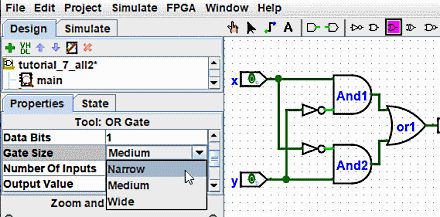

תכונות של כלים ורכיבים
לכל כלי להוספת רכיבים למעגל יש גם קבוצה של תכונות, המוענקות לרכיבים נוצר על ידי הכלי, אם כי תכונות הרכיבים עשויות להשתנות מאוחר יותר מבלי להשפיע על הכלי תכונות. כאשר אתה בוחר כלי, Logisim תשנה את טבלת התכונות כדי להציג את התכונות של הכלי הזה.
לדוגמה, נניח שאנו רוצים ליצור שערי AND קטנים יותר. כרגע, בכל פעם שאנו בוחרים בכלי AND, זה יוצר שער AND גדול. אבל אם נערוך את התכונה Gate Size רק לאחר בחירת הכלי (לפני הצבתו שער ה-AND שלו למעגל), נשנה את התכונות של הכלי, כך שיתווספו שערים ו-AND עתידיים השימוש בכלי יהיה צר במקום זאת.

כעת, אנו יכולים למחוק את שני שערי ה-AND הקיימים ולהוסיף שני שערי AND חדשים במקומם. הפעם, הם יהיו לְצַמְצֵם. (אם תבחר לצמצם את מספר הכניסות ל-3, לשער AND לא תהיה הרחבה אנכית על צד שמאל. אבל תצטרך גם לחבר מחדש את המעגל כך שהחוטים יפגעו בצד שמאל של שער ה-AND.)
בכלים מסוימים, סמל הכלי משקף חלק מערכי התכונות. דוגמה אחת לכך היא הכלי Pin, שהסמל שלו פונה באותה צורה כפי שאומרת התכונה Facing שלו.
לכלים בסרגל הכלים יש ערכת תכונות נפרדת מהכלים המתאימים בחלונית הסייר. לפיכך, למרות ששינינו את הכלי AND של סרגל הכלים כדי ליצור שערי AND צרים, הכלי AND בשערים הספרייה עדיין תיצור שערי AND רחבים אלא אם תשנה גם את התכונות שלה.
למעשה, כלי פין הקלט ופין הפלט בסרגל הכלים המוגדר כברירת מחדל הם שני המופעים של ספריית Wiring כלי סיכה, אבל ערכות התכונות שונות. הסמל של כלי הסיכה מצויר כעיגול או ריבוע בהתאם לערך של התכונה Output? שלו.

Logisim מספקת קיצור דרך שימושי לשינוי התכונה Facing השולטת בכיוון שבו רבים רכיבים פנים: הקלדת מקש חץ בזמן שהכלי הזה נבחר משנה אוטומטית את כיוון הרכיב.
הבא: מדריך למשתמש.